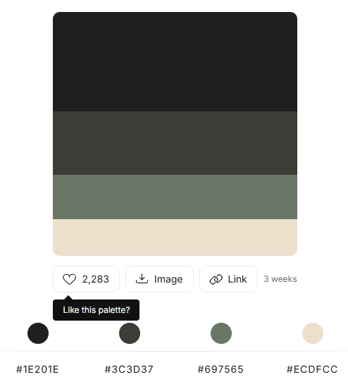

Foi usado para esse site o site Color Hunt como cores para fundo e fontes.
link: https://colorhunt.co/Foram usados essas cores:
História feita e realizada pela Empresa Riot Games.
Site: https://universe.leagueoflegends.com/pt_BR/champion/ahri/Foram usados para os gif's o site Tenor
Gif 1: https://tenor.com/pt-BR/view/curves-dangerous-ahri-lol-gif-16238595Gif 2: https://tenor.com/pt-BR/view/ahri-league-of-legends-ahri-fox-ahriri-gif-13967011549536505664
Gif 3: https://tenor.com/pt-BR/view/ahri-2xko-ahri-2xko-ahri-nedx-gif-15409884311208793062